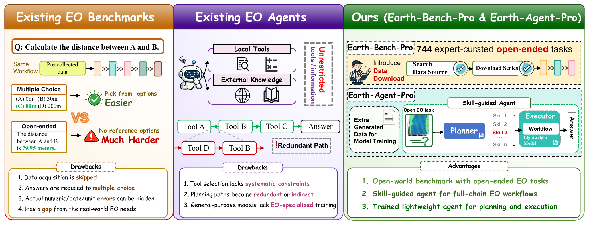
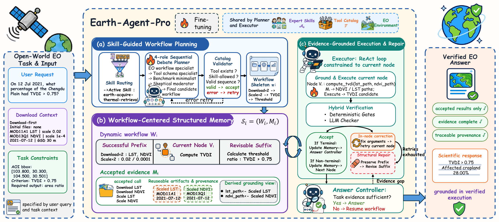
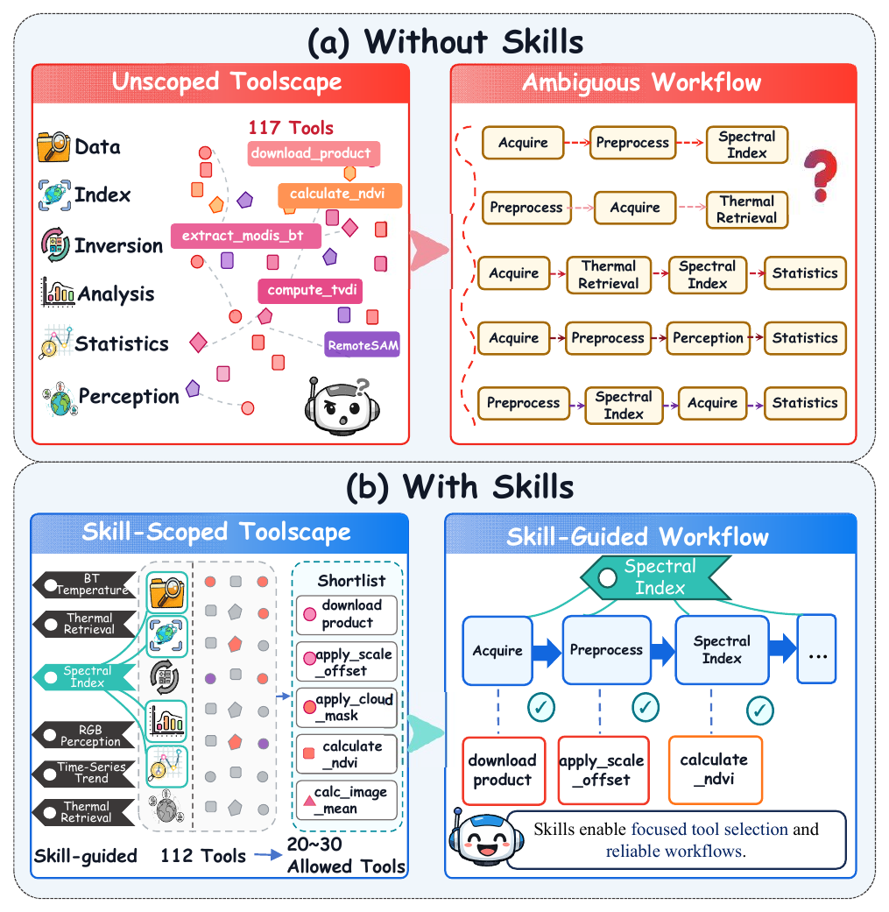
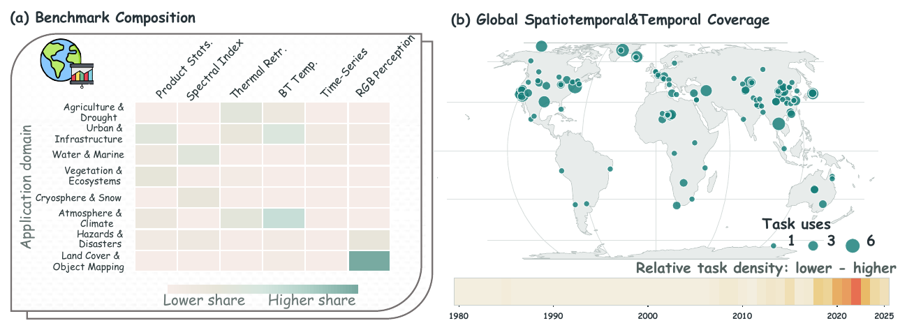
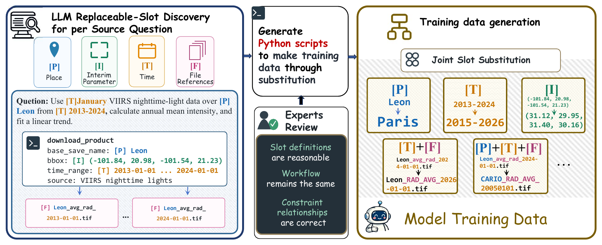
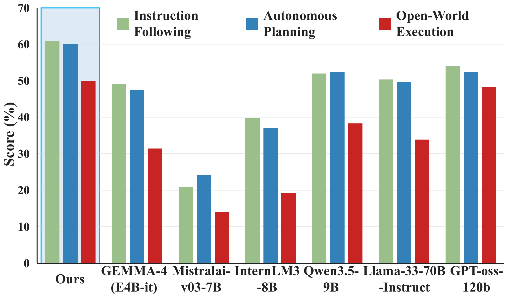
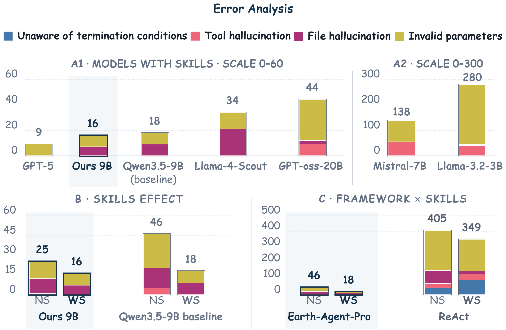
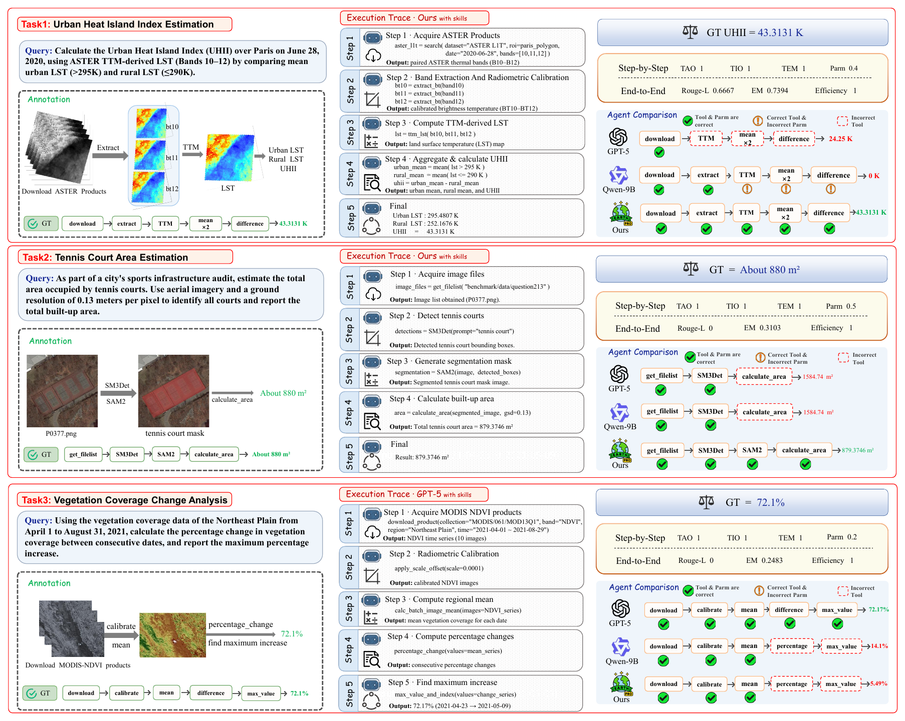

Earth-Agent-Pro: Towards Real-World Full-Chain Earth Observation with Agents
* Equal Contribution
† Corresponding Author
Ship distance
Replace a failed ship detector, then measure the closest pair.
Disaster damage
Keep the accepted result for Region A and replan the missing Region B analysis.
Atmospheric absorption
Download MODIS observations and replace an incompatible processing tool.
Tennis court localization
Switch the detection tool and locate the center of the largest court.
Snow-cover change
Download two years of MODIS data and repair annual aggregation through two replanning steps.
Abstract
Real-world Earth observation analysis requires agents to translate high-level scientific questions into workflows that acquire observations, prepare data, perform domain computations, and derive conclusions from runtime evidence. Earth-Agent-Pro is an execution-adaptive Plan-and-Execute framework that uses expert-authored skills to guide planning and runtime tool use. Its structured memory links planned steps to accepted evidence and repairs only the affected workflow suffix when execution invalidates a step.
We introduce Earth-Bench-Pro, with 744 questions across three matched regimes and three data modalities. Separate Planner and Executor adapters specialize workflow composition and tool-argument grounding. Under a shared GPT-5 backbone, Earth-Agent-Pro achieves 66.13% LLM-as-Judge accuracy, 20.95 percentage points above ReAct. Joint role training improves Qwen3.5-9B from 38.31% to 50.00% on Open-World Execution.
THE NEXT STEP
From prepared inputs to full-chain execution
{kind=link}

Our earlier Earth-Agent and Earth-Bench start with expert-prepared local inputs and multiple-choice questions. Real-world scientific requests require more: finding suitable observations, preparing data, executing domain computations, and deriving an answer from runtime evidence.
Earth-Agent-Pro extends the evaluation boundary. A request specifies a phenomenon, region, and period. The agent must discover or acquire inputs, bind intermediate artifacts to downstream tools, and produce an open-ended scientific answer. Earth-Bench-Pro preserves the same 248 scientific objectives so that changes in autonomy can be studied under matched task cores.
Earth-Agent-Pro
{kind=link}

Earth-Agent-Pro is an execution-adaptive Plan-and-Execute framework. Expert-authored skills constrain workflow planning and runtime tool use. The Planner composes an ordered workflow; the Executor grounds each operation in observations and accepted upstream evidence.
Workflow-centered structured memory records planned steps, accepted evidence, and their dependencies. When runtime evidence invalidates a step, the agent repairs the affected suffix while preserving the successful prefix.
METHOD DETAILS
Expert skills guide the entire workflow
{kind=link}

Six expert-authored skills encode task-level procedures across spectral analysis, product-based computation, and RGB perception. They specify tool scope, operation order, argument constraints, and repetition rules. Skill and tool routing narrow the catalog of 112 callable tools before planning.
- Plan a valid sequence. A four-role sequential debate checks the EO procedure, tool schemas, sequence parsimony, and executability. A catalog validator verifies tool existence and skill membership.
- Ground each operation. The Executor combines the active skill, current tool schema, query constraints, and accepted upstream observations to instantiate arguments.
- Verify and repair. Deterministic checks and an LLM checker gate evidence acceptance. Failed attempts guide local retries; structural failures trigger suffix repair while preserving the valid prefix.
Structured memory records planned and invoked tools, grounded arguments, execution status, provenance, and revision history. Only verified results become evidence for downstream operations.
 Earth-Bench-Pro
Earth-Bench-Pro
{kind=link}

Earth-Bench-Pro instantiates 248 expert-curated task cores as 744 questions across three matched regimes: Instruction-Following, Autonomous-Planning, and Open-World Execution. The benchmark spans RGB imagery, spectral observations, and remote sensing products.
- Instruction-Following: prepared inputs and a reference tool sequence.
- Autonomous-Planning: prepared inputs and a scientific question.
- Open-World Execution: a scientific question with runtime input requirements; observations and intermediate artifacts must be discovered or acquired during execution.
188 Spectrum and Product tasks require online acquisition and preprocessing. The other 60 RGB tasks retain user-provided imagery with runtime file discovery. All three regimes use open-ended answers and evaluate both final outcomes and execution trajectories.
The 248 verified open-world workflows contain 1,765 tool calls, use 84 distinct tools, and average 7.1 calls per task. Matched variants yield 5,295 reference calls across all 744 questions. Experts author 323 acquisition specifications for the 188 Spectrum and Product tasks, including sources, bands, spatial extent, time, resolution, sampling and scaling.
Evidence is part of the benchmark. Experts rerun workflows, inspect intermediate rasters, files, numerical outputs, masks, and statistics, and check final values, units, precision, temporal references, and trends against execution evidence.
Role-Specialized Training
{kind=link}

Separate Planner and Executor adapters specialize the underlying language model for different roles. Sequence-level supervised fine-tuning targets workflow composition; node-level group relative policy optimization targets tool-argument grounding with locally verifiable rewards.
Joint tuning improves Qwen3.5-9B LLM-as-Judge accuracy from 38.31% to 50.00%, an 11.69 percentage-point gain over the untuned configuration.
Training-data construction. Dependency-preserving synthesis expands 248 seed workflows into 2,480 trajectories. Replaceable slots and sample-specific programs generate valid instances, with expert verification of workflow structure and dependencies. These are combined with public OpenEarthAgent examples in a balanced training mixture.
Different objectives for different roles. Planner SFT learns complete ordered workflows. Executor GRPO optimizes argument grounding at individual nodes using locally verifiable rewards, allowing the two adapters to specialize without conflating planning and execution.
Experimental Results
+20.95 points over ReAct
Shared GPT-5 backbone, tool set, and skill set. Quality metrics are percentages.
| Framework | LLM Judge ↑ | ROUGE-L ↑ | EM ↑ | Efficiency ≈1 | TAO ↑ | TIO ↑ | TEM ↑ | Param. ↑ |
|---|---|---|---|---|---|---|---|---|
| ReAct | 45.18 | 19.75 | 26.60 | 0.8636 | 57.83 | 47.53 | 43.33 | 24.33 |
| AFlow | 40.16 | 10.80 | 36.70 | 0.8511 | 70.47 | 45.46 | 37.18 | 20.33 |
| OpenEarthAgent | 41.53 | 13.83 | 25.00 | 0.8101 | 60.06 | 42.62 | 39.32 | 22.67 |
| Earth-Agent-Pro | 66.13 | 21.68 | 13.31 | 1.0911 | 87.61 | 71.97 | 60.14 | 27.28 |
Earth-Agent-Pro leads seven of eight reported metrics (Table VI). AFlow leads exact-match accuracy (EM).
38.31% → 50.00% with role training
Qwen3.5-9B, with separate Planner and Executor adapters. Quality metrics are percentages.
| Planner / Executor | LLM Judge ↑ | ROUGE-L ↑ | EM ↑ | Efficiency ≈1 | TAO ↑ | TIO ↑ | TEM ↑ | Param. ↑ |
|---|---|---|---|---|---|---|---|---|
| Base / Base | 38.31 | 16.33 | 15.73 | 1.0129 | 85.59 | 74.57 | 67.29 | 25.05 |
| Base / Tuned | 43.15 | 17.31 | 18.15 | 0.9865 | 85.44 | 72.24 | 65.64 | 28.34 |
| Tuned / Base | 44.76 | 20.67 | 18.55 | 1.1839 | 89.47 | 78.78 | 70.09 | 30.33 |
| Tuned / Tuned | 50.00 | 20.65 | 19.76 | 1.1571 | 91.28 | 81.11 | 71.01 | 32.77 |
Joint training (Table VIII) raises judge accuracy by 11.69 points and parameter accuracy by 7.72 points, with longer trajectories.
Understanding the metrics
TAO: Tools-Any-Order; TIO: Tools-In-Order; TEM: Tool-Exact-Match; Param.: parameter accuracy. EM measures exact answer matching. Efficiency is the predicted-to-reference tool-call ratio, with 1 as the ideal value. LLM-as-Judge evaluates final-answer quality.
BACKBONE EVALUATION
Earth-Agent-Pro with different LLM backbones
| Model | LLM Judge ↑ | ROUGE-L ↑ | EM ↑ | Efficiency ≈1 | TAO ↑ | TIO ↑ | TEM ↑ | Param. ↑ |
|---|---|---|---|---|---|---|---|---|
| GPT-5 | 66.13 | 21.68 | 13.31 | 1.0911 | 87.61 | 71.97 | 60.14 | 27.28 |
| Gemini-3.5-flash | 63.31 | 25.43 | 20.56 | 1.0752 | 89.28 | 73.90 | 64.49 | 32.19 |
| Claude-4.6-sonnet | 56.85 | 29.09 | 29.03 | 1.1911 | 90.17 | 76.59 | 63.52 | 28.02 |
| GLM-4.5-Air | 48.39 | 20.45 | 20.16 | 1.0063 | 85.46 | 72.76 | 62.30 | 27.01 |
| Llama-3.1-8B-Instruct | 13.71 | 5.15 | 2.02 | 0.9811 | 75.34 | 60.81 | 44.95 | 22.04 |
| Llama-3.2-3B-Instruct | 4.44 | 2.25 | 2.42 | 0.6873 | 51.09 | 44.26 | 36.62 | 13.96 |
| Llama-3.3-70B-Instruct | 33.87 | 8.69 | 6.45 | 1.0526 | 85.17 | 73.51 | 56.69 | 27.39 |
| Llama-4-Scout | 32.66 | 9.91 | 7.66 | 0.9335 | 81.81 | 70.47 | 57.57 | 25.88 |
| InternLM3-8B | 19.35 | 6.86 | 5.24 | 0.7617 | 69.33 | 58.49 | 48.85 | 20.73 |
| Intern-S1 | 40.73 | 15.49 | 13.71 | 1.0022 | 85.44 | 73.62 | 60.24 | 31.26 |
| GPT-oss-20B | 38.71 | 14.10 | 10.48 | 1.1510 | 85.94 | 71.08 | 59.59 | 28.62 |
| GPT-oss-120B | 48.39 | 13.54 | 8.87 | 1.0415 | 86.16 | 71.62 | 61.61 | 29.84 |
| Qwen3.5-27B | 49.60 | 19.12 | 15.32 | 1.0017 | 87.67 | 75.27 | 68.71 | 29.86 |
| Gemma-4 (E4B-it) | 31.45 | 12.49 | 9.68 | 0.7841 | 69.33 | 61.36 | 55.13 | 23.26 |
| Gemma-4 (26B-A4B-it) | 47.58 | 18.49 | 14.52 | 1.0766 | 84.19 | 72.62 | 61.80 | 31.23 |
| MistralAI-v0.3-7B | 14.11 | 6.32 | 4.44 | 0.5876 | 54.31 | 46.18 | 42.18 | 15.61 |
| Qwen3.5-4B | 32.26 | 16.61 | 14.52 | 0.9447 | 79.21 | 66.87 | 57.99 | 21.58 |
| Qwen3.5-9B | 38.31 | 16.33 | 15.73 | 1.0129 | 85.59 | 74.57 | 67.29 | 25.05 |
| Ours (4B, fine-tuned) | 43.15 | 22.42 | 21.77 | 1.1117 | 87.93 | 77.52 | 68.96 | 28.98 |
| Ours (9B, fine-tuned) | 50.00 | 20.65 | 19.76 | 1.1571 | 91.28 | 81.11 | 71.01 | 32.77 |
Final-answer quality and workflow fidelity expose different strengths. GPT-5 has the highest LLM-as-Judge score in this comparison; the fine-tuned 9B model attains the strongest trajectory and parameter scores among the reported open-source models. Fine-tuning improves judge accuracy by 10.89 points for the 4B model and 11.69 points for the 9B model.
Comparison across Evaluation Regimes
{kind=link}

Open-World Execution remains the hardest regime across the evaluated backbones. Removing prepared inputs adds data discovery and runtime grounding to the workflow. “Ours” denotes the role-specialized Qwen3.5-9B.
COMPLETION AND COST
Comparison with general-purpose agents
| Framework | Spectrum | Products | RGB | Average | Latency ↓ |
|---|---|---|---|---|---|
| Codex | 40.00 | 75.00 | 25.00 | 46.67 | 268.73 |
| Manus | 40.00 | 45.00 | 45.00 | 43.33 | 291.00 |
| Earth-Agent-Pro (GPT-5) | 70.00 | 55.00 | 100.00 | 75.00 | 208.64 |
| Earth-Agent-Pro (Qwen3.5-9B) | 45.00 | 40.00 | 65.00 | 50.00 | 67.83 |
| Earth-Agent-Pro (9B, fine-tuned) | 70.00 | 40.00 | 65.00 | 58.33 | 111.79 |
Earth-Agent-Pro with GPT-5 reaches 75.00% average accuracy in this comparison, with a mean latency of 208.64 seconds. Codex leads on Product tasks, while Earth-Agent-Pro performs best on Spectrum and RGB. The base 9B configuration is faster, and role training improves its accuracy with additional execution time.
GENERALIZATION
Comparison with remote-sensing MLLMs
| Model | Boundary | Ranking | Coverage | Area | Distance | Average |
|---|---|---|---|---|---|---|
| GeoChat | 57.54 | 58.83 | 12.16 | 0.12 | 0.78 | 31.02 |
| TeoChat | 56.14 | 65.85 | 7.25 | 0.12 | 0.00 | 31.16 |
| EarthDial | 55.09 | 52.98 | 7.02 | 0.00 | 0.00 | 27.73 |
| LHRS-Bot | 55.20 | 56.73 | 8.07 | 1.55 | 0.00 | 28.97 |
| EarthMind | 54.85 | 59.77 | 12.28 | 4.65 | 0.00 | 30.74 |
| TerraScope | 66.20 | 69.94 | 40.70 | 0.00 | 0.00 | 42.60 |
| Earth-Agent-Pro (GPT-5) | 66.43 | 70.64 | 40.35 | 31.58 | 1.55 | 50.41 |
| Earth-Agent-Pro (Qwen3.5-9B) | 66.43 | 71.35 | 40.35 | 31.58 | 1.55 | 50.58 |
Tool-grounded processing improves average accuracy and area measurement, while distance measurement remains difficult. A numerical answer is correct when its relative error is below 15%. The average is sample-weighted: the first four categories contain 855 examples each, and distance measurement contains 129.
CONTROLLED ABLATIONS
What do skills and role training contribute?
| Framework / Model | Skills | LLM Judge ↑ | TIO ↑ | TEM ↑ | Param. ↑ |
|---|---|---|---|---|---|
| ReAct / Qwen3.5-9B | No | 34.27 | 31.39 | 21.55 | 10.44 |
| ReAct / Qwen3.5-9B | Yes | 39.92 | 37.66 | 29.76 | 12.14 |
| Earth-Agent-Pro / Base 9B | No | 35.08 | 61.94 | 51.71 | 24.84 |
| Earth-Agent-Pro / Base 9B | Yes | 38.31 | 74.57 | 67.29 | 25.05 |
| Earth-Agent-Pro / Tuned 9B | No | 37.10 | 70.93 | 55.92 | 30.00 |
| Earth-Agent-Pro / Tuned 9B | Yes | 50.00 | 81.11 | 71.01 | 32.77 |
Skills remain useful after training. On the tuned 9B model, adding skills increases judge accuracy from 37.10% to 50.00%. Skills supply explicit procedures; role training improves the learned policies that use them.
| Planner | TAO ↑ | TIO ↑ | TEM ↑ |
|---|---|---|---|
| GPT-5 | 88.86 | 76.38 | 70.03 |
| InternLM3-8B | 72.15 | 55.38 | 46.87 |
| Gemma-4 (E4B-it) | 83.75 | 71.34 | 61.80 |
| MiniMax-M2.7 | 87.90 | 71.89 | 67.66 |
| Base | 86.70 | 71.87 | 66.96 |
| Tuned | 92.51 | 83.35 | 76.14 |
Planner SFT improves workflow composition. Isolating planning shows gains in the predicted tool set and order. These scores do not imply successful end-to-end execution, which also depends on runtime grounding.
| Executor | LLM Judge ↑ | ROUGE-L ↑ | EM ↑ | Efficiency ≈1 | Param. ↑ |
|---|---|---|---|---|---|
| GPT-5 | 68.95 | 24.31 | 18.15 | 0.9872 | 39.58 |
| InternLM3-8B | 38.71 | 12.04 | 10.48 | 0.8620 | 31.13 |
| Gemma-4 (E4B-it) | 33.87 | 12.74 | 10.89 | 0.7109 | 33.66 |
| MiniMax-M2.7 | 51.21 | 19.44 | 18.15 | 0.8309 | 35.72 |
| Base | 46.37 | 21.92 | 20.16 | 0.9081 | 34.19 |
| Tuned | 52.82 | 25.92 | 23.39 | 0.9274 | 37.20 |
Executor GRPO improves argument grounding. With the reference tool order fixed and workflow edits disabled, the tuned Executor improves judge accuracy from 46.37% to 52.82% and parameter accuracy from 34.19% to 37.20%. GPT-5 retains a higher score in this controlled setting.
ERROR ANALYSIS
Execution errors and remaining challenges
{kind=link}

Correct tool selection does not guarantee a correct scientific answer. Workflow-order errors, argument grounding, and downstream semantic tool-selection errors remain important limitations. Some failed executions terminate early, so a short trajectory alone is not evidence of efficient completion.
The results support stronger full-chain execution while exposing remaining gaps in precise numerical grounding and modality-specific performance. The case study below includes both successful execution and a Product-task failure.
Case Study
{kind=link}

BibTeX
Manuscript citation.
@misc{lv_earthagentpro,
title = {Earth-Agent-Pro: Towards Real-World Full-Chain
Earth Observation with Agents},
author = {Zhutao Lv and Chenhao Dang and Yi Feng and
Yanpei Gong and Xiaolei Wang and Junyan Ye and
Conghui He and Weijia Li},
note = {Manuscript}
}